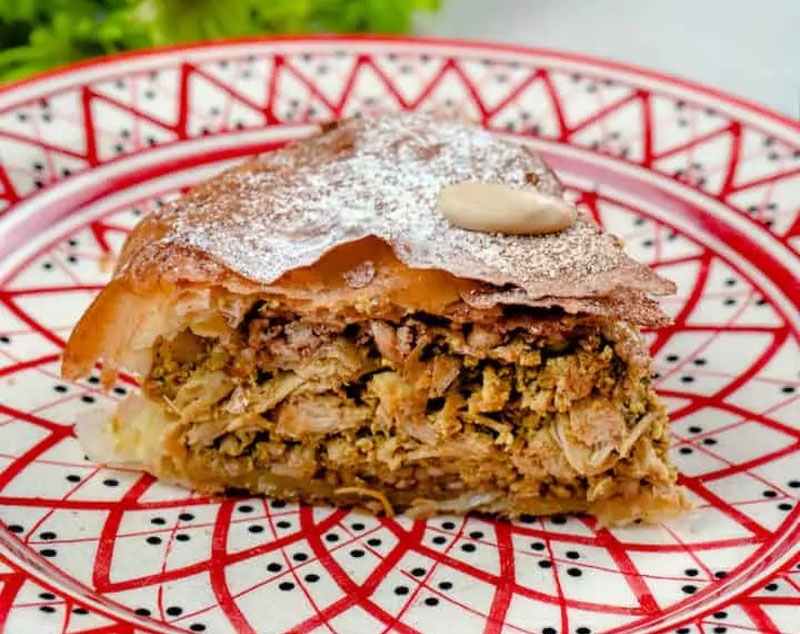

Home
Moroccan Chicken Bstilla (sweet and savory)

Description
Served on special events, like weddings, bastila is the ultimate Moroccan meal. Traditionally it was made with pigeon but today we will be making it with chicken. Only recently has this dish become something that an average Moroccan person might eat – previously it was reserved only for royalty or the wealthy.
Ingredients
Filling
- 1 medium onion finely chopped
- 2 teaspoons vegetable oil
- 3-4 boneless, skinless chicken breast halves
- ¼ cup minced fresh flat leaf parsley
- 2 tablespoons minced cilantro
- ½ teaspoon ground turmeric
- 1 teaspoon ground ginger
- 1 ¼ teaspoon ground cinnamon
- 8 saffron threads
- 1 teaspoon salt
- ½ teaspoon pepper
- 3 eggs, lightly beaten
- ⅔ cups powdered sugar
- 1 cup water
Almond Mixture
- ½ cup whole blanched almonds
- ½ cup powdered sugar
- 1 teaspoon ground cinnamon
- 12 sheets thawed phyllo dough
- ½ cup melted butter
- ground cinnamon and powdered sugar for garnish
Instructions
Filling
- In a large saucepan over med heat, heat the oil.
- Saute’ onion until golden (6-8 min).
- Add chicken, parsley, cilantro, turmeric, saffron, water, ginger, & cinnamon.
- Cover & cook until the chicken is tender (20-25 min).
- Transfer chicken to a bowl or plate and set aside to cool. Let the sauce continue to simmer in the pan and add the beaten eggs, salt, pepper, & sugar.
- Stir constantly until the eggs are gently scrambled.
- Shred the chicken & add it to the egg mixture.
- Set Aside.
Almond Mixture
- In a blender or food processor, coarsely grind the almonds and mix w/ sugar & cinnamon. Set aside.
- Preheat the oven to 218°C
- Remove 12 sheets of phyllo from the package and re-wrap the remaining phyllo in its original wrap. Refrigerate for future use.
- Stack the 12 sheets on a work surface and cover w/ a damp towel.
- Spread a little butter on a pizza pan or baking sheet.
- Layer 3 sheets of phyllo, lightly spraying each layer with butter.
- Sprinkle the third sheet evenly with half of the almond mixture.
- Layer & butter 3 more sheets.
- Spread the chicken mixture evenly over the top, leaving about a 4 cm border of phyllo.
- Fold over the edges to partially cover the chicken mixture.
- Layer & butter 3 more sheets over the chicken, sprinkling the remaining almond mixture evenly over the top.
- Layer & butter the last 3 sheets of phyllo over the almond mixture.
- Tuck the edges of the last 6 sheets under the bastilla as you would a bed sheet (at this point, take another baking sheet and place it on top, then flip it over & seal the last 6 sheets of phyllo from bottom to top)
- Bake the bastilla until golden brown (20-25 min).
- Place the powdered sugar in a fine-meshed sieve. Tap the sides of the sieve to cover the surface of the bastilla lightly and evenly with sugar.
- Using thumb & forefinger, sprinkle ground cinnamon over the top (either make patterns, or just lightly dust it).
- Serve immediately, before pastry becomes soggy.